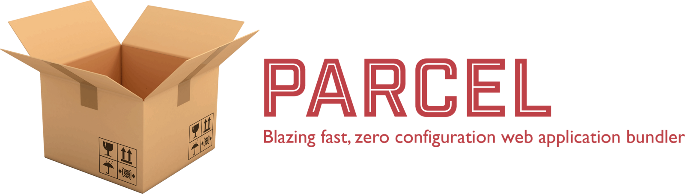

Frontend dev Boilerplate

Getting started:
路 Open your terminal and clone
the repo
路 Then run:
路
> npm install
to download and install all dependencies.
路
> npm run test
to verify everything is up and running.
路
> npm start
to start the environment.
路 go to
localhost://8888
to see this page.
路 enjoy auto-reload, JavaScript transpiling and Sass preprocessing
Build and deploy
路 Just run:
路
> npm run deploy
路 Your project will be uploaded to Github Pages using:
https://your_github_user.github.io/project_name
For any inquiries feel free to
open a pull request
or contact me on twitter
@d4vecarter